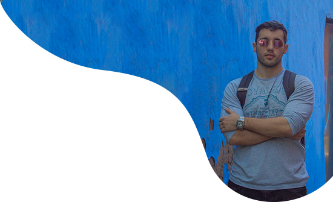

Digital Designer With
Mediterranean Flair
The Romans said Ex Nihilo, Nihil Fit
, which in our times would translate to From Nothing, Nothing Comes
. Therefore, I try to always be involved with something either by learning new skills and knowledge or by putting them into practice with some personal artistic project.
Hello, my name is Pablo Elices Pérez and I am a versatile and multi-skilled graphic designer as I have experience and knowledge in different fields such as brand management, digital marketing, design for printed media and web design. However, I specialize in making creative and digital art.
My adventure with art direction goes back to a summer day when being a child, I was given a Warhammer’s set that I first had to paint and for which then I had to create the scenery. Already in high school, from after having to make my first HTML3 website in computer science course, I started to be curious about digital art.
Nevertheless, it wasn’t until I entered university that I discovered the concept of art direction. In fact, This, together with branding and semiotics (study of symbols and signs) is the branch that I have most enjoyed, to the extent that I keep being passionate about them even today. So, every time that I create a product, I look for this triple axis. An axis with which not only I can make campaigns that respond in a holistic way to a well-defined and elaborated aesthetic and strategy, but that also uses the appropriate symbols for firstly awaken interest in the target audience and secondly give meaning and sense to the product.
On the other hand, I love languages, I keep studying them and I am grateful to have been able to practice them in my experiences in Sweden and Hungary. While it is true that I only remember a few words and basic phrases in Swedish and Hungarian, I have been able to enhance my skills in French and Italian but above all in English, the language in which I have studied and worked.
On my more personal side, I love outdoor activities such as photography but especially going to park to do calisthenics, a sport that I feel helps me to be constant, flexible, resilient and focused to overcome the challenge given. All the opposite to an outdoors activity, but still something I like doing is keep training myself with related education to what I work in and as I proof I learn new skills from youtube videos and tutorials or online paid courses such as the one I did for motion graphics.
Finally I would like to highlight among my achievements:
- The pop-up book that withing a team we did when none of us had ever before done anything like this
- The social advertising campaign Nothing Special did in Hungary on an autonomous basis to give visibility to people with physical and psychological problems
- A poster I did for the event La Casa de Papá Noel in Mutxamel which went viral since neighbours themselves shared it on social media and groups
- The Gaydar App Redesign, which together with developers managed to improve incredibly
- The Easter 2019 Gaydar campaign after which 7000 old users came back.